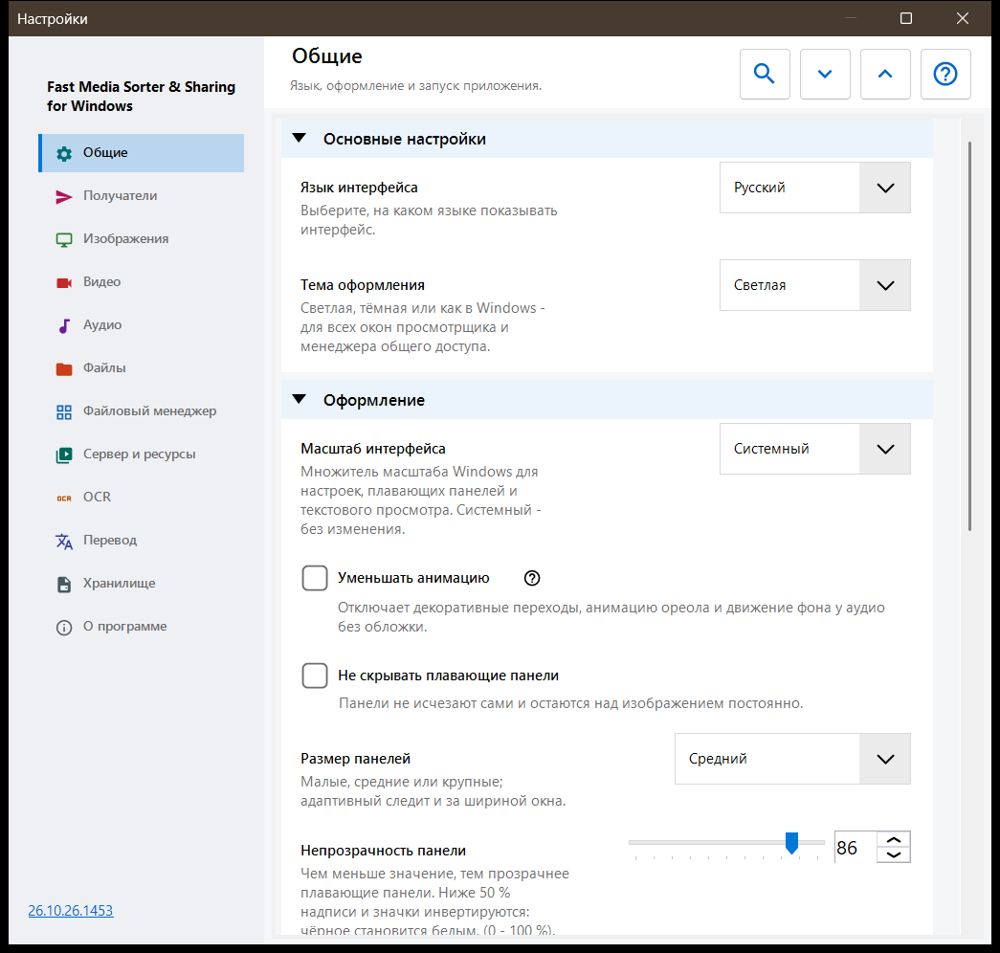
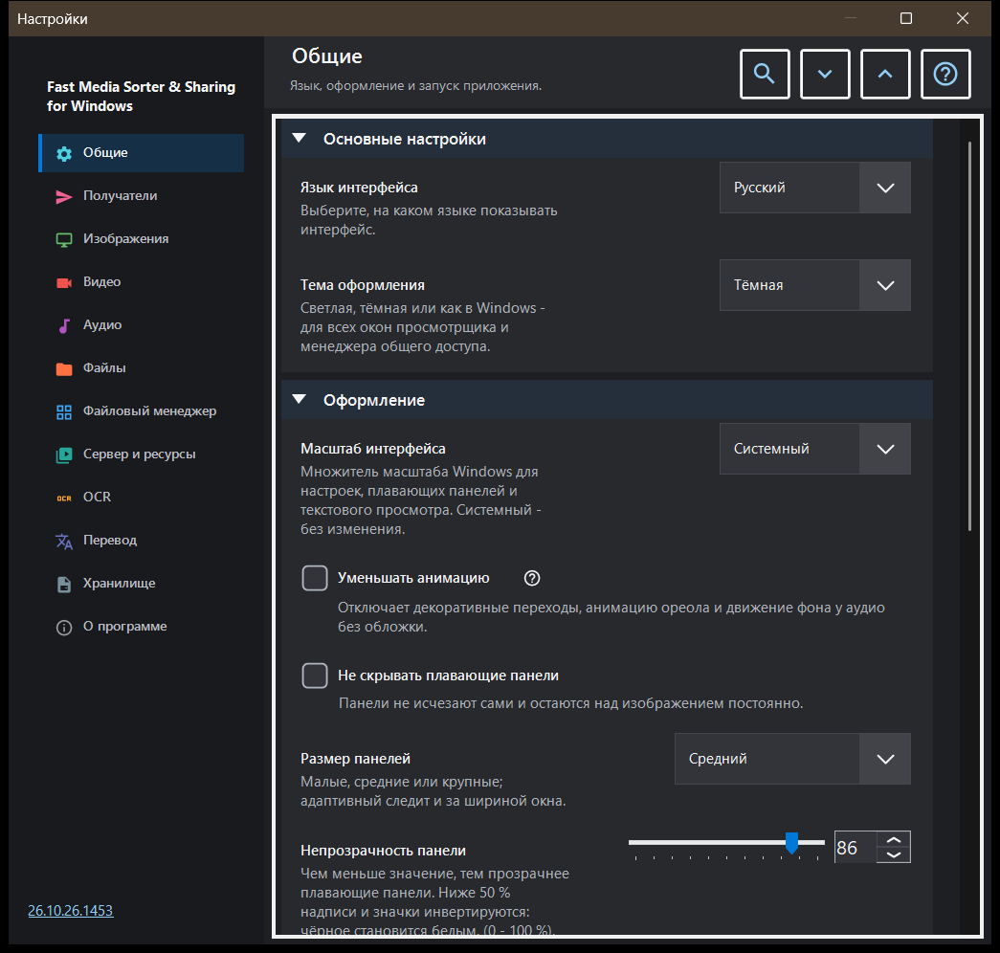

Настройки
Настройки
Назначение
Окно «Настройки» собирает все параметры просмотрщика. Оно открывается по F2, кнопкой «Настройки» на панели инструментов или из файлового менеджера панели изображений кнопкой «Настройки..», которая сразу переходит на страницу Файловый менеджер. Страницы перечислены в боковой панели слева, а группы на странице можно сворачивать.


Порядок действий
- Выберите страницу в боковой панели или введите слово в поле «Поиск настроек», чтобы найти параметр.
- Кнопки «Развернуть все» и «Свернуть все» раскрывают или сворачивают все группы страницы.
- Измените нужные параметры.
- Нажмите Esc, чтобы закрыть окно.
Элементы окна
Общие
Язык и тема (Тема оформления), затем вид плавающих панелей: масштаб интерфейса, уменьшение анимации, закрепление, размер, прозрачность, углы, информация поверх изображения и скрытие курсора мыши; кнопка «Вернуть панели на места» возвращает все сдвинутые панели на их обычные места. Группа Запуск определяет, что происходит при старте (открывать при запуске, продолжить с последнего файла, разрешить новые окна), и содержит «Показать приветственные шаги снова» - это снова открывает окно приветствия. Группа Дополнительные настройки экспортирует и импортирует дополнительные настройки и возвращает значения по умолчанию.
Получатели
Десять папок, в которые переносят файл клавиши 1-9 и 0; Shift с цифрой верхнего ряда копирует в ту же папку. В таблице по строке на каждую клавишу: выберите строку и нажмите «Папка на этом компьютере..», «Ресурсы» (папка на SFTP или SMB) или «Очистить», либо перетащите папку на строку. Группа Вид таблицы получателей задаёт положение, ширину, размер текста, прозрачность и число видимых строк таблицы поверх изображения, а параметр «Таблица получателей поверх изображения» включает и выключает эту таблицу.
Изображения
Как открываются и выглядят изображения: масштаб нового изображения, автоповорот по тегу EXIF, «Масштабирование колёсиком», анимированная графика через видеоплеер и сведения о размере изображения, размере файла и дате. Группа Фон изображения задаёт цвет вокруг картинки, Перспективный фон и ореол (динамический, анимированный, скорость). Группа Поведение слайд-шоу задаёт интервал, случайный порядок, останавливает ли показ ручное листание и что делает интерфейс во время показа. В дополнительной части - качественное масштабирование и размер карточки миниатюры.
Видео
Участвуют ли видеофайлы в просмотре, автовоспроизведение, действие в конце ролика, запоминание позиции и «Общий звук: аудио и видео». Дальше идут группы с предпочтительными языками звука и субтитров и управлением воспроизведением: что делает одиночный щелчок, задержка элементов управления, элементы управления на паузе и три шага перемотки.
Аудио
Участвуют ли аудиофайлы в просмотре, действие в конце трека, громкость по умолчанию и запуск без звука. Группа сведений и управления содержит постоянно видимую аудиопанель, визуализацию для файлов без обложки и таймер сна.
Файлы
Работа с файлами: переход к следующему после копирования, что делать при совпадении имён и после копирования или переноса, строка состояния при файловых операциях, создание отсутствующей папки назначения, «Удалять в Корзину» и подтверждение удаления. Группа Типы файлов охватывает вложенные папки, расширения, документы, размер предпросмотра текста и прочие файлы. Остальные группы задают недавние файлы и папки, пределы для архивов и защищённые файлы .fd-sec. В группе Клавиши и ассоциации есть кнопка «Сочетания клавиш», которая открывает окно горячих клавиш, и ассоциации файлов для изображений и видео.
Файловый менеджер
Параметры файлового менеджера панели изображений: Режим отображения (плитки или список), Фильтр содержимого, скрытые файлы и действие для файлов, не являющихся медиа. Группа Места выбирает, какие места показывать (локальные, ресурсы, устройства), и содержит «Запоминать сортировку».
Сервер и ресурсы
Список Серверы и сетевые папки содержит ресурсы SFTP и SMB, которые просмотрщик открывает и использует как получателей. Группа Android / SFTP нужна, чтобы публиковать папки этого компьютера по SFTP для приложения Android; в ней есть руководство по подключению и кнопка «Управление SFTP-сервером для андроид-клиента..». У записи сервера обмена, пока она подключена и её сервер хранит СТАНДАРТ настроек, есть кнопки «Сохранить как СТАНДАРТ..» и «Прочитать СТАНДАРТ..»: первая сохраняет отмеченные группы настроек на сервере как СТАНДАРТ вашей учётной записи, вторая переносит значения отмеченных групп на этот компьютер. Пути, пароли, ключи и размеры окон остаются только на этом компьютере, оператор сервера может прочитать СТАНДАРТ, а дальнейшие изменения здесь остаются местными, пока вы снова не прочитаете СТАНДАРТ.
OCR
«Включить OCR» включает распознавание текста, а «Запускать автоматически» позволяет ему запускаться самому. Группа Распознавание текста задаёт язык оригинала, качество, режим и загрузку языковых данных.
Перевод
Выберите сервис («Сервис перевода») и язык перевода («Язык перевода»); остальные поля содержат адрес сервиса, локальный сервер Ollama, модель и ключ API. Группа Перевод поверх изображения задаёт прозрачность и видимость панели перевода поверх картинки.
Хранилище
Пределы кэшей и кнопка очистки для каждого из них: декодированные изображения, миниатюры панели изображений, архивы и сетевые ресурсы. У дискового кэша OCR есть параметр «Кэшировать результаты на диске», собственный предел и кнопка очистки.
О программе
Сведения о продукте и ссылки: Обновления, Сброс настроек, связанные проекты, Справка по программе, сайт, GitHub, релизы, страница о конфиденциальности, лицензия MIT и уведомления о сторонних компонентах. «Отправить логи автору» показывает окно согласия со списком того, что попадёт в архив, и затем передаёт архив почтовой программе; программа не открывает для этого сетевых соединений.
Документы
Включите чтение PDF отдельно от фильтров сортируемых файлов. Выберите одну страницу, непрерывную прокрутку или разворот, цвет страниц, масштаб, область поиска и лимиты кэша. Кнопки страниц меняют страницы, кнопки файлов - файлы. В текстовых элементах документа B/N, цифры и Delete принадлежат документу. Esc возвращает управление холсту. Позиции и именованные закладки отделены от оформления; его сброс сохраняет их. Чтение вслух использует установленные голоса Windows. Пароль остаётся в открытом сеансе. Чтение выполняется локально с временной копией, чтобы оригинал можно было переместить. Обычный экспорт настроек исключает историю чтения, закладки и оформление отдельных документов. У текстовых файлов свои группы. «Полное чтение текстовых файлов» открывает их со шрифтами, темами, номерами строк и поиском; файл больше предела правки читается частями. «Правка текстовых файлов» добавляет Ctrl+E: сохранение не меняет кодировку, а несохранённые правки хранятся в зашифрованном черновике. «Открыть как текст» в меню файла показывает как текст любой другой файл.